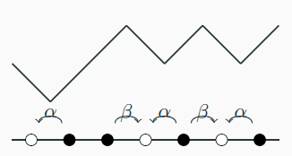
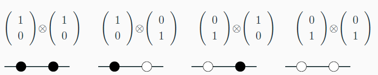
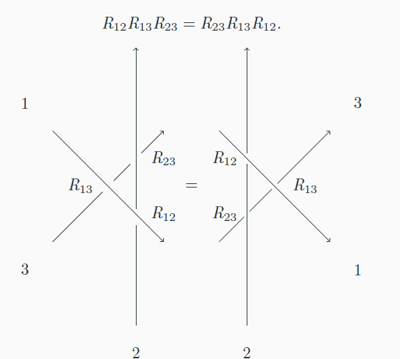
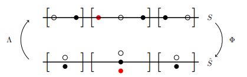

Accessibility statement: A WCAG2.1AA compliant version of these notes will eventually available, once I finish writing them. I tested it out using NVDA, a screen reader. It works best if you uncheck “graphic” and “clickable” in the settings. I am also testing out dyslexia–friendly fonts right now. You can also download the TeX source file.
These lecture notes were created with Ximera, an interactive textbook platform hosted by Ohio State University. The Ximera Project is funded 2024-2026 (with no other external funding) by a $2,125,000 Open Textbooks Pilot Program grant from the federal Department of Education.
These notes have not yet been peer–reviewed. However, it is updated with all three lectures. To load the most updated version, click the orange “update” button at the top of the page. If it is not there, then you are reading the most up-to-date version. The button looks like this:
Recordings of the lectures are available on Oleg Zaboronski’s webpage.
Funding was provided by The London Mathematical Society and Lancaster University, University of Bristol, University of Edinburgh, Warwick University, Queen Mary University of London, and Ximera.
Broadly speaking, integrable probability is a branch of probability theory which studies models which have exact solutions. For this reason, these models are often called exactly solvable. From these exact solutions, one can derive precise universal asymptotics, such as the famed Tracy–Widom distribution. The origin of these solutions are usually due to algebraic symmetries underlying the model. In these set of lecture notes, we will introduce the relevant algebraic background with a probabilistic researcher as the target audience.
We first summarize some mathematical results since the early 1990s which contextualize the field in its current (2024) state. The well–known Tracy–Widom distribution was first discovered in [18], [19], where it describes the asymptotic fluctuations of the largest eigenvalues of the Gaussian Unitary Ensemble. In those papers, the distibution is defined in terms of a Fredholm determinant. Several years later, a surprising result of [2] proved that the Tracy–Widom distribution also occurs in the asymptotic fluctuations of longest increasing subsequences of random permutations. At the time, there was no explanation for why the same distribution would occur in the asymptotics of seemingly unrelated models.
The aforementioned exact solutions are a common theme in models with Tracy–Widom asymptotics. At this point in time, a complete list of all such models and relevant papers would be incredibly long, but for the purposes of these notes we can restrict to models with known quantum group symmetry. The canonical such model is the asymmetric simple exclusion process in one dimension. For an example of what these exact formulas look like, consider the result of [20], which shows that for an ASEP with initial conditions , the probability at being in state at time \(t\) is given by a sum over \(N!\) terms, with each summand being a N–fold integral:
For completeness, we state what these terms are. As usual \(S_N\) is the symmetric group on N elements, and an inversion of a permutation \(\sigma \) is an ordered pair such that and . The term \(A_{\sigma }\) is defined to be and \(S_{\alpha\beta}\) is the "scattering term" The term q is the asymmetry parameter. When , the totally asymmetric case, the formula reduces to a determinantal expression found in [16]. In this sense, the summation over the symmetric group \(S_N\) is related to Leibniz’s determinantal formula.The asymptotic analysis proving Tracy–Widom convergence was done in the follow-up paper [21], generalizing the result for the totally asymmetric case in [10]. Generally speaking, exact formulas and asymptotic analysis are easier when . However, we will later see that this is not true when using quantum groups.
At this point, the reader may be curious why any exact formulas should exist in the first place. This is due to the underlying quantum group symmetry of ASEP. To quote [20],
“... it has been known for some time that the generator of ASEP is a similarity transformation of the quantum spin chain Hamiltonian known as the XXZ model. Since the XXZ Hamiltonian is diagonalizable by Bethe Ansatz, it is reasonable to expect that these ideas are useful for ASEP.”
These notes will explicitly explain the underlying quantum group symmetry.
For even more historical context, the terminology for “integrable probability” originates in integrable systems from Hamiltonian mechanics. In Hamiltonian mechanics, the phase space is represented as a smooth manifold with even dimension \(2n\), with coordinates denoted for the momentum and position. An integrable system is a system with \(n\) conserved quantities which are mutually Poisson commuting, and the Liouville–Arnold theorem states that the equations of motion can be solved in quadratures. For an explicit example, the harmonic oscillator in one dimension (imagine an object attached to a frictionless spring) is integrable, and the conserved quantity is the total energy. In contrast, the three–body problem is not integrable, and its solutions are notoriously non–exact.
During the 1980s, many Soviet mathematicians and physicsts introduced quantum mechanics into integrable systems. In quantum mechanics, quantities such as position, momentum and energy became operators which generally do not commute; additionally, the values of these quantities only take discrete, “quantized” values. In this context, the concept of “conserved quantities” becomes “commuting operators,” and values of the quantities are eigenvalues of eigenstates. At the time, their approaches were called the “quantum inverse scattering method.” Since then, the method has been generalized to abstract algebraic objects, such as Hopf algebras.
These notes will introduce one such algebraic object, known as quantum groups, with a particular focus on the Yang–Baxter equation. The exposition will use probability and mathematical physics as a motivation. The goal is for a reader with a probability background to be able to read contemporary (as of 2024) research papers in integrable probability.
To begin to motivate the notes, we first introduce the asymmetric simple exclusion process (ASEP) and its relationship to the Heisenberg XXZ model and the quantum group .
ASEP was introduced in the mathematics community in [17], and previously in a biology paper [11]. In ASEP, particles randomly jump on a lattice, which we assume to be one–dimensional. At most one particle may occupy a site, and jumps to occupied sites are blocked (hence the term “exclusion”). Jumps are nearest neighbour (hence the term “simple”). If the jumps are continuous–time exponential clocks with left rates \(\alpha \) and right rates \(\beta\), then let denote the asymmetry parameter. If , then the model is asymmetric (sometimes partially asymmetric), while for the model is symmetric. For or the model is called totally asymmetric. The symmetric exclusion process (without the word simple) can be defined more generally on an arbritrary graph. In princple, so can the asymmetric exclusion process, although this is not as well studied.

The generator of the simple exclusion process can be explicitly written. In the most elementary case where there are two lattice sites, then there are four possible configurations. Associate to each particle the vector and to each hole (i.e. a non–particle) the vector . Tensoring the vectors together, we can associate to each configuration a canonical basis element of the four–dimensional vector space . The field here is chosen to be the complex numbers because it is algebraically closed, although of course probabilities are real numbers.

With that set up, the generator is then a matrix The constant \(\alpha \) can be viewed as a time rescaling, so it can be removed without loss of generality.
In a more general setting, where there are N lattice sites, the generator can be defined from the above \(4\times 4\) matrix, which we now denote L. The generator is now a matrix and acts on . Define by Similar notation using subscripts will be used throughout these notes.
The corresponding notion of integrability in the quantum case comes from Yang–Baxter equation. It was shown by Baxter [3] that when a matrix solves the Yang–Baxter equation, there are corresponding “commuting transfer matrices,” which are analogous to conserved quantities in the classical setting.
Using the same notation as in the previous section, we say that a matrix \(R\) solves the braided Yang–Baxter Equation if: Somewhat confusingly, this equation is also sometimes called the braid equation or just the Yang–Baxter equation. An equivalent formulation is where and permutes the tensor power (exercise left to the reader).
A visual representation of YBE is given by this image:

In some settings, the YBE occurs in the scattering of particles with quantum mechanics considerations, such as the QISM (quantum inverse scattering method.)
Given an arbitrary matrix R, one can check that it satisfies the YBE through direct computation. However, it maybe more helpful to consider some simple examples first.
If denotes the permutation operator which sends to then the braided Yang–Baxter equation becomes an identity of transpositions: This identity holds, since both sides equal the permutation An even more simple solution is the identity matrix.
A probabilist may remark that a permutation matrix and an identity matrix are both examples of a stochastic matrix, albeit somewhat trivial examples. It may then be natural to try to find more general stochastic matrices which solve the Yang–Baxter equation. The “simplest” generalization occurs when \(V\) is two–dimensional, with basis Using exclusion processes as a prototype, we can define the operator \(R_{\alpha \beta }\) by and
Inserting this matrix into the Yang–Baxter equation and evaluating at one finds that is a necessary requirement for a solution to YBE. Evaluating and at and yields no aditional equations. (Exercise left to the reader)
One could also evaluate YBE at the three vectors , and , but instead we use another symmetry of ASEP. This is called particle–hole involution. In words, in an ASEP with drift to the right, the holes evolve as an ASEP with drift to the left. Symbolically, we define an involution \(T\) of \(V\) which switches \(e_1\) and \(e_2\). Then . A mildly helpful observation here is that \(T\) is stochastic, so its composition with other stochastic matrices is also stochastic. Using these identities, one immediately verifies YBE for , and . Furthermore, these two solutions are related up to the particle–hole involution.
One notices that is the generator of ASEP at two lattice sites. It is then natural to ask whether or not addition by constants affects integrability. The answer is “no” (otherwise integrable probability would not exist). As some intuition, let us suppose that the generator has an explicit set of eigenvectors and eigenvalues. In general, an arbitrary Markov process will have complicated eigenvectors and eigenvalues, but for integrable models we expect “nice” eigenvectors and eigenvalues, from which probabilistic information can be extracted. Then addition by constants leaves the eigenvectors unaffects and only shifts the eigenvalues, leaving them just as “nice.” Thus, it is fair to say that ASEP is integrable, at least on two lattice sites.
At this juncture, it is reasonable to object that nothing has been said about the integrability of ASEP on arbitrarily many lattice sites. We will put this question on hold, as the next section’s discussion of the XXZ model will lay the foundation for answering this question.
Having established that ASEP is an integrable model at two lattice sites, it is natural to ask about other integrable models that look similar to ASEP, so that we can avoid re–inventing the wheel. Thus we now turn our attention to a related model, called the quantum Heisenberg model. These were introduced by Werner Heisenberg [7] to incorporate quantum mechanics into magnetism, and [12, 1] pointed out the the XXZ Hamiltonian is conjugate to the ASEP generator.
Each lattice site has a microscopic magnetic dipole, which can either be up or down. If there are N lattice sites, then the Hamiltonian acts on the \(2^N\)–dimensional vector space . So, at the very least, the state space of the XXZ model is the same as the ASEP state space.
To define the model, first recall that Pauli spin matrices: The notation are often used instead. Note that these are traceless and are Hermitian, the latter property being important in physics (since Hermitian matrices have real eigenvalues, and these eigenvalues correspond to physical quantities). Letting so that \(\sigma ^a_j\) acts on the j–th lattice site while fixing the others, the Hamiltonian is then where are some coupling constants and h is the external field. We impose periodic boundary conditions, so that . If are distinct then one obtains the XYZ model. If then this is the XXZ model; if then it is the XXX model.
Each summand in the Hamiltonian can be written as a four by four matrix: If , as assumed in the XXZ model, then the top–right and bottom–left entries are zero. In this case, the non–zero entries are at least the same as in the ASEP generator. Recalling the previous section’s heuristic that adding by constants does not change integrability, we can set to obtain the matrix .
At this point, it is worth noticing that the YBE is a statement about operators on vector spaces, which should not depend on the choice of bases on the vector spaces. In other words, conjugation (which corresponds to a change of basis) should not affect integrability. As it turns out, conjugation by results in the ASEP generator on two sites. (Exercise left to the reader).
Next, we introduce the \(sl_2\) symmetry of ASEP. This was first observed in the seminal paper of [15].
So far, we have determined that ASEP is integrable and is conjugate to the XXZ Hamiltonian (assuming that we are ignoring the question of arbitrary lattice sizes). As it turns out, the Pauli matrices form a basis of the real Lie algebra \(su_2\) corresponding to the real compact Lie group . Here, a real Lie group means that the underlying field is the real numbers, not that all the entries are real (consider the unit circle in the complex plane as a real Lie group, for example).
The complexification of is the (non–compact) Lie group of traceless \(2 \times 2\) matrices with complex entries. For a variety of reasons, some of which answer historical, most mathematicians are introduce to the Lie algebra \(sl_2\) rather than \(su_2\), so we will use that notation.
By definition, \(sl_2\) is the Lie algebra with basis denoted and brackets . Note that the explicit matrices satisfy these relations, where \(E_{i,j}\) denotes the matrix with a 1 at the \(i,j\)–entry and a 0 everywhere else.
Returning to the XYZ model, one can calculate that the XXX model has symmetry (exercise to the reader) in the sense that commutes with the Hamiltonian of the XXX model for . However, for the XXZ model, the commutation only works for . Therefore, whatever algebra is underlying the XXZ model (and hence that of ASEP), we know that it can not be as simple as . Futhermore, since XXZ and ASEP have a free parameter, the algebra should be a one–parameter deformation of . This leads into the next topic of quantum groups.
The Drinfel’d–Jimbo quantum groups [6, 9] are quantizations of the Lie groups. Rather confusingly, the quantum groups are not themselves groups.
Before diving into the rigorous definition, one notes where the quantization occurs. Using probabilistic intuition, we expect that the SSEP should have an underlying \(sl_2\) symmetry, whereas the ASEP should have the quantum group symmetry. However, SSEP and ASEP on a single lattice site are identical, so the quantization must require multiple lattice sites. We’ve established that in this case, the vector space is . This raises the question: how does \(sl_2\) act on tensor powers?
To answer this question, we take an aside about Lie algebras, which are tangent spaces to Lie groups at the origin. What this implies is that for a Lie group G with a Lie algebra g, we have that and . Setting , the natural action of a group on tensor products is Taking derivatives and heuristically using Leibniz’s rule for derivative of products, we obtain . This is expressed through the co–product defined by .
Since it is the co–product that allows for the algebra to act on multiple lattice sites (i.e. tensor powers), the quantization occurs in the co–product, not the algebra itself! As it turns out, the right deformation is , where we interpret \(q^h\) as a formal power series in h. Note that we do not deform the co–product of h, which is consistent with \(\sigma ^z\) commuting with the XXZ model.
Depending on the preferences of the author, the generator h may be replaced with with the co–product becoming . (Exercise to the reader why that is the same co–product). In words, h is primitive and k is group–like.
In this section, we will define Hopf algebras, which are named after Heinz Hopf. (This is a different Hopf than the namesake of the Cole–Hopf trasnformation, who is named Eberhard Hopf). The original paper possibly goes back to [8].
While I presented the co–product as the object that allows for multiple lattice sites, that is of course not how it is presented to algebraists. A more common description is that a co–algebra is dual to an algebra, with the co–product dual to the product. This subsection will provide a rigorous definition of a co–algebras.
One motivation is that the space of functions on an algebra is a co–algebra. The Lie algebra is actually itself a space of differential operators on a Lie group (it is the direction derivative), so is a space of functions on the algebra of smooth functions on the Lie group. Thus, you would expect a Lie algebra to have a co–algebra structure.
Recall that an algebra A is a vector space with a multiplication operator which assumed to be bilinear. It is also associative in the sense that , which essentially means that . This is equivalently stated as . Additionally, there is an identity element satisfying . This can be written as an inclusion from the underlying field F to the algebra A.
Before defining co–algebras, it will be useful to draw certain commutative diagrams. The associativity can be written as
![[Picture]](Introduction_to_Quantum_Groups-bae53b21480fc93c9dd5b0c7399c691c.svg)
If one reverses the arrow of this diagram, which is also fortunately easy on Tikz, one obtains
![[Picture]](Introduction_to_Quantum_Groups-dd7c25167eaff271578cab4b6c343436.svg)
The condition of co–associativity means that this diagram commutes.
In a similar vein, the unit element can be understood as an inclusion from the base field to the algebra such that the following diagram commutes:
![[Picture]](Introduction_to_Quantum_Groups-3cf8e89194a705b708d323b4ce50d576.svg)
Reversing the direction of the arrows, one obtains
![[Picture]](Introduction_to_Quantum_Groups-d5e0b8820293d161db308af35526c7a2.svg)
A co–algebra is a vector space with a co–product and co–unit satisfying the above properties. For the co–unit is
A bi–algebra is an algebra and co–algebra such that the co–product and co–unit are also algebra homomorphisms.
A Hopf algebra is a bi–algebra with an anti–homomorphism S such that this diagram commutes:
![[Picture]](Introduction_to_Quantum_Groups-f9745204225c28241dbc2c37dad7778c.svg)
Finally, I get to R–matrices. A Hopf algebra H is co–commutative if the coproduct \(\Delta \) equals its reversal where maps to . A Hopf algebra is almost co–commutative if there is an invertible element such that for all .
An almost co–commtuative Hopf algebra is quasi–triangular if the additional relations hold for the element R: In a quasi–triangular Hopf algebra, the R–matrix satisfies the Yang–Baxter equation.
Having shown that solutions to Yang–Baxter Equation can come from Hopf algebras, we now introduce a spectral–dependent Yang–Baxter Equation that comes from affine Lie algebras.
Given a finite–dimensional Lie algebra \(\mathfrak {g}\), define its affinization by where c is a central element. In words, this is a one–dimensional central extension of the loop algebra over \(\mathfrak {g}\). The Lie bracket is then defined by where \((\cdot ,\cdot )\) is the Cartan–Killing form on \(\mathfrak {g}\). This Lie algebra is now infinite–dimensional, which makes its representation theory tricker.
There is an analogous quantum group which has an R–matrix satisfying Yang–Baxter equation. For modules where c acts as 0 (level 0 representations), we can define an evaluation module by takng a module of \(\mathfrak {g}\) and then letting t act as multiplication by z. If the element R now acts on evaluation modules, then it depends on a parameter which we call the spectral parameter. The Yang–Baxter equation now reads If we attempt to find \(4\times 4\) solutions to the spectral–dependent YBE analogous to ASEP, we get a two–parameter family of solutions, which end up being the weights of the stochastic six vertex model, which we now define.
The stochastic six vertex model was defined in [12], with the generic six vertex model going back to [14]. The six weights are displayed below:
![[Picture]](Introduction_to_Quantum_Groups-a7a136b8c2b8d54f27e03e7d75c5c8e9.svg)
The number of arrows coming in from the bottom and left must equal the number of arrows coming out from the top and right. Thus, there are possible vertices. On a two–dimensional lattice, perhaps with fixed boundary conditions, this defines a weight on configurations:

In general, we do not really want to brute force solutions to the Yang–Baxter equation in arbitrary representations. Here, I present a way to construct new solutions from old solutions. The original idea comes from [5].
In linear algebra, for any vector space V, a symmetric tensor is an element of preserved by any . For quantum groups, however, we have a q–deformation in the tensor powers so that P and \(\Delta \) no longer commute. However, there is still a symmetric tensor power
In lieu of an extensive algebraic discussion, we present it in probabilistic language. Recall Pitman–Rogers intertwining [13]: suppose there are two Markov kernels \(\Lambda \) and (\Phi \) such that . Let and assume Then \(\Phi \) defends a Markov projection from P to Q:

More specifically, if is a Markov process on state space S and is deterministic, with a Markov kernel then is a Markov process on \(\hat {S}\).
This procedure is sometimes called fusion.
This intertwining can be constructed algebraically, but instead we draw a metaphor with stationary measures. We want to show that If for all v, we have that \(v\Lambda \) is stationary under P, i.e. , then the above intertwining becomes which then follows from
Calculating the fused vertex weights then requires orthogonal polynomials (please reference the Appendix).
At this point, a natural question arises: do these weights satisfy YBE? For the stochastic vertex models, they do. For interacting particle systems such as ASEP, the situation seems to be dependent on the choice of Lie algebra.
Here, we mention a method for constructing non–integrable interacting particle systems using central elements. The original argument goes back to [15] for ASEP (which happens to be integrable), and was then generalized in [4] for a partial exclusion process, where an arbitrary number of particles may occupy a site.
From here, let . We define some subalgebras by letting be generated by e, and generated by f and \(U^0\) generated by k. Analogously, is generated by e,k and is generated by f,k. There are central elements, sometimes called Casimir elements, that have the form
One reason for introducing these subalgebras is because of the highest weight representations. We call V a highest weight representation if there exists a vector v, called the highest weight vector, such that and V is generated by . Then the action of the Casimir on the highest weight vector is given by for some complex number . Also let denote a basis of V, where each \(v_{\mu }\) can be expressed as for some .
We define the Hamiltonian H by taking the co–product of C on tensor powers of representations: We want to find a diagonal matrix G such that is the generator of a continuous–time Markov process. As a necessary condition, we need that has rows which sum to c; non–negativity is more difficult to ensure. One way to achieve this is with an eigenvector of eigenvalue c. Namely, assume that g is a vector such that . If g has the form then the diagonal matrix will satisfy the necessary requirement, as long as is always nonzero.
As it turns out, (the tensor power of the highest weight vector) will satsify due to the form of the co–product and the central element. However, this choice will have zero entries. So instead we take g of the form for some appropriate choice of coefficients (reference the appendix for more detailed calculations).
This section will cover topics that were not included in the in–person lectures, but are still worth mentioning. The links go to a separate webpage with the mathematical content.
[1] F. C. Alcaraz, M. Droz, M. Henkel, and V. Rittenberg,Ann. Phys. (N.Y.)230:250 (1994).
[2] Baik, J.; Deift, P.; Johansson, K. (1999), ”On the distribution of the length of the longest increasing subsequence of random permutations”, Journal of the American Mathematical Society, 12 (4): 1119–1178,
[3] R. J. Baxter. One-dimensional anisotropic Heisenberg chain. Ann. Physics, 70:323–337, 1972.
[4] Carinci, G., Giardiná, C., Redig, F. Redig, T. Sasamoto. A generalized asymmetric exclusion process with stochastic duality. Probab. Theory Relat. Fields 166, 887–933 (2016).
[5] Corwin, I., Petrov, L. Stochastic Higher Spin Vertex Models on the Line. Commun. Math. Phys. 343, 651–700 (2016).
[6] Drinfeld, V. G. (1985), ”Hopf algebras and the quantum Yang–Baxter equation”, Doklady Akademii Nauk SSSR, 283 (5): 1060–1064,
[7] Heisenberg, W. (1 September 1928). ”Zur Theorie des Ferromagnetismus” [On the theory of ferromagnetism]. Zeitschrift für Physik (in German). 49 (9): 619–636.
[8] Hopf, Heinz (1941). ”Über die Topologie der Gruppen–Mannigfaltigkeiten und ihre Verallgemeinerungen”. Ann. of Math. 2 (in German). 42 (1): 22–52.
[9] Jimbo, Michio (1985), ”A q-difference analogue of \(U(g)\) and the Yang-Baxter equation”, Letters in Mathematical Physics, 10 (1): 63–69,
[10] Johansson, K., ”Shape fluctuations and random matrices”, Communications in Mathematical Physics, 209 (2): 437–476, 2000.
[11] MacDonald CT, Gibbs JH, Pipkin AC. Kinetics of biopolymerization on nucleic acid templates. Biopolymers. 1968;6(1):1–5.
[12] L.-H. Gwa and H. Spohn,Phys. Rev. A 46:844 (1992).
[13] L.C.G. Rogers and J.W. Pitman, Markov Functions, The Annals of Probability, Vol. 9, No. 4 (Aug., 1981), pp. 573-582 (10 pages)
[14] Pauling, L. (1935). ”The Structure and Entropy of Ice and of Other Crystals with Some Randomness of Atomic Arrangement”. Journal of the American Chemical Society. 57 (12): 2680–2684.
[15] G. Schütz, Duality relations for asymmetric exclusion processes, J Stat Phys 86, 1265–1287 (1997).
[16] G. Schütz, Exact solution of the master equation for the asymmetric exclusion process. J. Stat Physics, 88 427–445 (1997).
[17] F. Spitzer, Interaction of Markov Processes, Advances in Mathematics, Volume 5, Issue 2, October 1970, Pages 246–290.
[18] Tracy, Craig A. Widom, Harold, ”Level-spacing distributions and the Airy kernel”, Physics Letters B. 305 (1—2): 115-–118 (1993).
[19] Tracy, C. A.; Widom, H. (1994), ”Level-spacing distributions and the Airy kernel”, Communications in Mathematical Physics, 159 (1): 151-–174 (1994).
[20] C. Tracy and H. Widom, “Integral Formulas for the Asymmetric Simple Exclusion Process,” Comm. Math. Phys., volume 279, pages 815–844 (2008).
[21] Tracy, C. A.; Widom, H., ”Asymptotics in ASEP with step initial condition”, Communications in Mathematical Physics, 290 (1): 129–154, 2009.